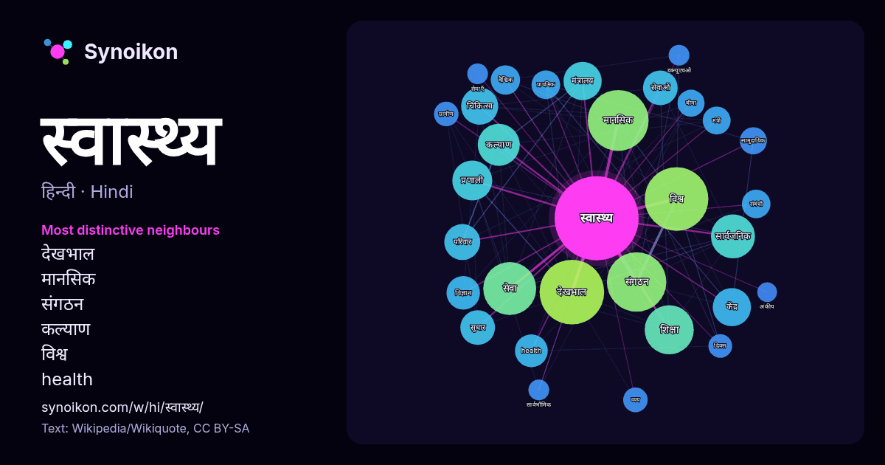

हिन्दी · लोकप्रिय शब्द
स्वास्थ्य
“health” · विकिपीडिया, Wikiquote के 1163 प्रयोगों में इसके आसपास मिले शब्द।

सबसे विशिष्ट पड़ोसी
- देखभाल 68×
- मानसिक 55×
- संगठन 36×
- कल्याण 31×
- विश्व 26×
- health 25×
- मंत्रालय 24×
- सार्वजनिक 22×
- सेवा 21×
- सेवाओं 19×
- शिक्षा 16×
- चिकित्सा 16×
- सामुदायिक 16×
- सुधार 15×
- वैश्विक 15×
- केंद्र 14×
- प्रणाली 14×
- बीमा 13×
- व्यय 13×
- प्राथमिक 12×
× = सामान्य विकिपीडिया टेक्स्ट की तुलना में कितने गुना अधिक।
सबसे अधिक आने वाले पड़ोसी
- देखभाल 97
- विश्व 94
- मानसिक 86
- संगठन 82
- सेवा 65
- शिक्षा 56
- सार्वजनिक 45
- कल्याण 41
- प्रणाली 37
- केंद्र 34
- मंत्रालय 34
- क्षेत्र 33
- भारत 33
- चिकित्सा 32
- सरकार 31
- परिवार 30
- सुधार 28
- सेवाओं 28
- विज्ञान 26
- health 25
संदर्भ में
- विश्व स्वास्थ्य संगठन (W.H.O.) ने सन् 1948 में स्वास्थ्य या आरोग्य की निम्नलिखित परिभाषा दी गई है। 1) दैहिक, मानसिक और सामाजिक रूप से पूर्णतः स्वस्थ होना Wikipedia snippets · स्वास्थ्य
- विश्व स्वास्थ्य संगठन विश्व के देशों के स्वास्थ्य सम्बन्धी समस्याओं पर आपसी सहयोग एवं मानव को स्वास्थ्य सम्बन्धी समझ विकसित कराने की संस्था है। विश्व Wikipedia snippets · विश्व स्वास्थ्य संगठन
- स्वास्थ्य का मुद्दा स्वास्थ्य एवं परिवार कल्याण मंत्रालय के अंतर्गत आता है। यह मंत्रालय स्वास्थ्य विभाग, परिवार कल्याण विभाग और आयुर्वेद, योग, प्राकृतिक Wikipedia snippets · स्वास्थ्य एवं परिवार कल्याण मन्त्रालय, भारत सरकार
- स्वास्थ्य सेवा या हेल्थकेयर का अर्थ बीमारी की रोकथाम और उपचार करना है। स्वास्थ्य सेवा चिकित्सा, दन्त चिकित्सा, नर्सिंग और स्वास्थ्य से सम्बंधित पेशेवरों Wikipedia snippets · स्वास्थ्य सेवा
- और भी अधिक देर से हो। वास्तव में स्वास्थ्य का अर्थ केवल रोगरहित और दु:खरहित जीवन नहीं है। केवल जीवित रहना ही स्वास्थ्य नहीं है। यह तो पूर्ण शारीरिक, मानसिक Wikipedia snippets · स्वास्थ्य विज्ञान
- महिलाओं का स्वास्थ्य मानव सभ्यता और स्वास्थ्य प्रबंधन का एक अभिन्न अंग है क्योंकि महिलाएँ मानव समाज का लगभग आधा भाग हैं। कई स्वास्थ्य मामलों में महिलाएँ Wikipedia snippets · महिलाओं का स्वास्थ्य
- सार्वजनिक स्वास्थ्य सेवाओं तक मुफ्त पहुंच" प्रदान करने का आरोप लगाता है । स्वास्थ्य मंत्रालय ने 1970 के दशक से भूटान में सार्वभौमिक स्वास्थ्य देखभाल प्रदान Wikipedia snippets · भूटान में स्वास्थ्य
- मानसिक स्वास्थ्य हमारी भावनाओं की अभिव्यक्ति है और मांग की विस्तृत श्रृंखला के लिए एक सफल अनुकूलन का प्रतीक है। विश्व स्वास्थ्य संगठन, मानसिक स्वास्थ्य को Wikipedia snippets · मानसिक स्वास्थ्य
और शब्द
- इतिहास
- ईश्वर
- कार्य
- कुत्ता
- गर्मी
- गाना
- घंटी
- घड़ी
- घोड़ा
- चाय
- चित्रकला
- छाया
- जंगल
- जलवायु
- जीवन
- तूफ़ान
- दर्पण
- द्वीप
- नक्षत्र
- नमक
- परिवार
- पहाड़
- पानी
- पैसा
- प्रकृति
- बगीचा
- बिल्ली
- भाषा
- भोजन
- माता
- मानचित्र
- मृत्यु
- मौन
- रेगिस्तान
- रेलगाड़ी
- रोटी
- वर्षा
- विज्ञान
- शक्ति
- शरद
- शहद
- शहर
- सड़क
- सत्य
- समय
- सर्दी
- सेतु
- स्वर्ण
- हृदय
2026-10-09 को डिफ़ॉल्ट सेटिंग्स (±5 शब्द, मध्यम कॉर्पस) के साथ पहले से गणना की गई। इंटरैक्टिव मानचित्र इसे लाइव डेटा से ताज़ा कर सकता है।
मशीन-अनूदित इंटरफ़ेस; सुधारों का स्वागत है।